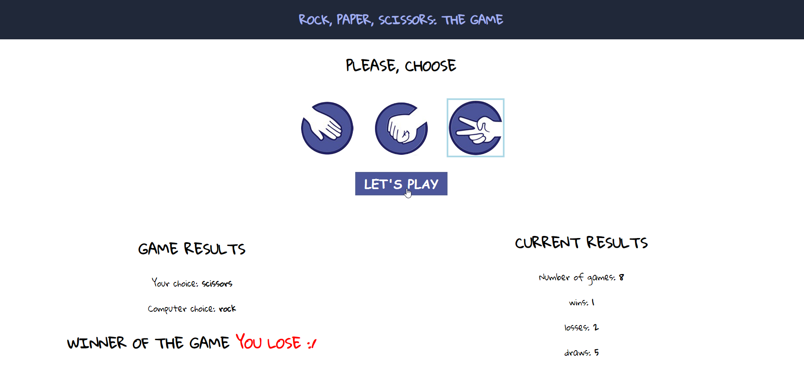
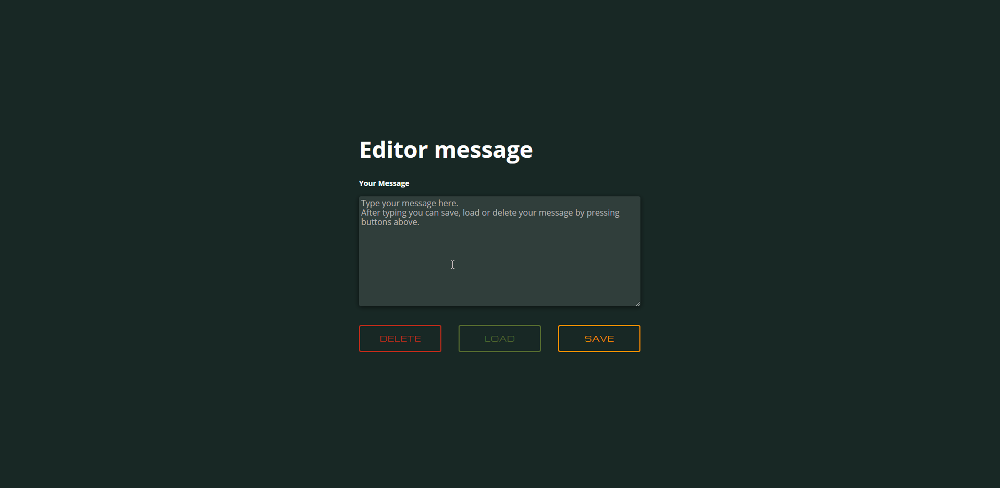

I like when some changes are visible from the start when i'm making something new.
Aboutme
Technologies
- HTML5
- CSS3
- Flexbox
- Sass
- RWD
- Javascript - ES6
- NodeJS & NPM
- Git
- Command Line Windows
Education
- School study for adults in Bialystok Adam's Mickiewicz name, profile: technician informatician
Courses
- Web Developer Kodilla: 10.2018
- WTF: Co ten frontend: Currently
Myprojects
-
A famous rock, paper scissors game is now possible virtually!

You can compete with computer and set how many rounds you want to play. -
Have you ever wonder how many degrees fahrenheit have celsius and in reverse? If so this is application you are looking for. You can compare those two degrees and check what status they have.
 -
My portofolio (which you are looking at) where you can check my code, how it's structured and how I build functionality to make it all work.